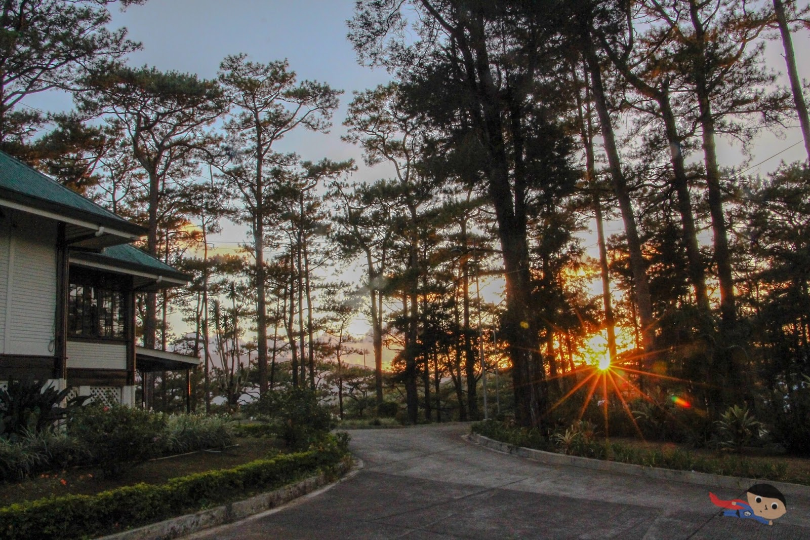

Baguio is a lovely city in the Philippines, nestled high up in the mountains. It's known for its chilly weather, which is quite unique in a country known for its warm climate. The city is surrounded by beautiful hills and forests, making it a perfect destination for people who enjoy natural beauty. There are plenty of things that you can do in Baguio, that includes Scenic Walks where you Take leisurely strolls amidst the cool mountain air, Market Shopping, Boating, Dining, Strawberry Picking, Art Museums, and even attend the Panagbenga Festival if you visit in the right time.
